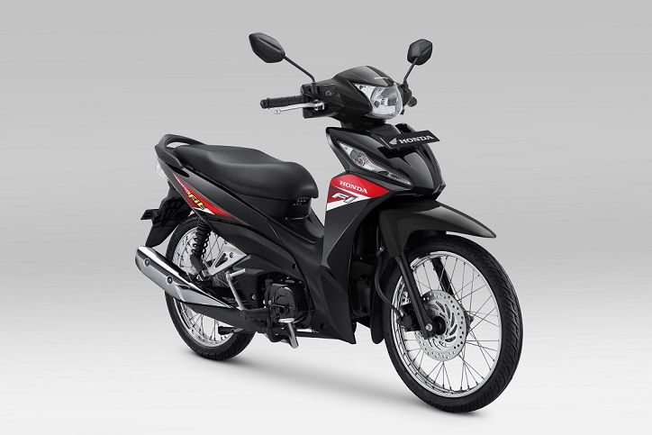
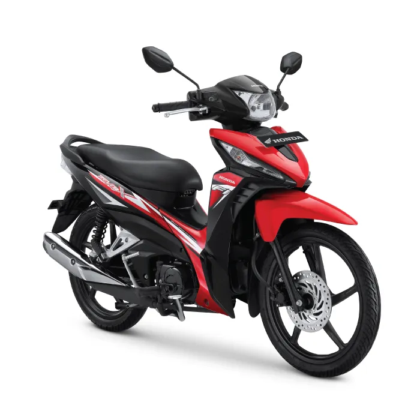

Honda Revo Fit
Harga mulai dari Rp.10.0000.000
Tipe Mesin SOHC , 4 Langkah , SOHC , Silinder Tunggal Kapasitas Mesin 109,17 cm3 Sistem Suplai Bahan Bakar Injeksi/PGM-FI (Programmed Fuel Injection) Diameter X Langkah 50 x 55,6 mm Tipe Tranmisi 4 Kecepatan Rasio Kompresi 9,3:1 Daya Maksimum 6,56kW (8,91 PS) / 7.500 rpm Torsi Maksimum 8,76 Nm (0,86 kgf.m) / 6.000 rpm Tipe Starter Starter Kaki & Starter Elektrik Tipe Kopling Multiplate Wet Clutch with Diaphrgam Spring Sistem Pendingin Mesin Pendingin Udara Pola Perpindahan Gigi N-1-2-3-4-N
Honda Revo X
Harga mulai dari Rp.11 000 000
Kapasitas 109.17 cc Tenaga Maksimal 8.79 hp Diameter x langkah 50 mm x 55.6 mm Jenis Kopling Wet, Multi-Plate, Diaphrgam Spring Rasio Kompresi 9.3:1 Jenis Mesin 4-Steps, SOHC, Single Cylinder Tipe injeksi Fuel Injection Torsi Maksimal 8.76 Nm Pipa Knalpot Single Exhuast Jumlah langkah 4-Stroke Kecepatan maksimum 110 kmph Jenis Penggerak Chain Drive Katup Per Silinder 2 Sistem Pendinginan Pendingin udara Konfigurasi Katup SOHC Jumlah silinder 1 RPM torsi maksimum 6000 rpm Kapasitas Tangki 4 L RPM Tenaga Maksimum 7500 rpm